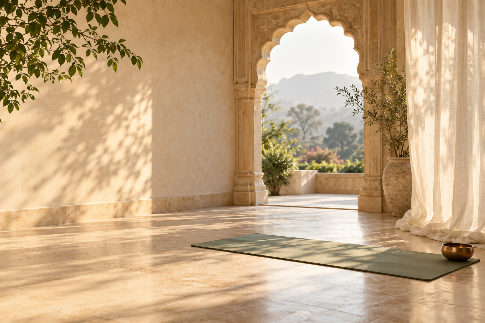

Átmozgatni.
Kilépni a mozdulatlanságból, és újra figyelmet adni a testednek. Valódi jógaászanákra épülő mozgással.
NÉHÁNY PERC ÖNMAGADÉRT
Rövid mozgás- és légzőgyakorlatok
a stresszes mindennapokra.
A Short Yoga segít átmozgatni a tested, lecsendesíteni az elméd és kapcsolódni önmagadhoz. Akkor is, ha nincs időd egy teljes jógaórára.
Saját tempó. Tudatos mozgás. Egy kis idő magadra.

MIÉRT SZÜLETETT MEG A SHORT YOGA?
Egész nap ülsz, feszült vagy, vagy egyszerűen csak szükséged van néhány nyugodt percre?
A Short Yoga rövid, követhető mozgás- és légzőgyakorlatokat ad olyan pillanatokra, amikor nincs időd egy teljes jógaórára. Helyet teremt a mozgásnak és a testi figyelemnek a mindennapjaidban.
Kezdődhet néhány perccel.
MIT KAPSZ A SHORT YOGÁVAL?
A Short Yoga rövid, átlátható gyakorlásokat ad, amelyek a valódi mozgást, a tudatos légzést és a testi figyelmet kapcsolják össze.
Kilépni a mozdulatlanságból, és újra figyelmet adni a testednek. Valódi jógaászanákra épülő mozgással.
Észrevenni a légzésed ritmusát, és összehangolni a mozdulatokkal. Kényelmesen, a saját tempódban.
Néhány percre letenni a napi rohanást. Megfigyelni, hogyan érzed magad, és teret adni a pihenésnek.
A SHORT YOGA GYAKORLATAI
Ismerd meg a Short Yogát az ingyenes programmal, vagy adj két hetet egy rövid, követhető mozgásrutin kialakításának.
Ismerkedj meg a Short Yogával.
Szeretnél mozogni, de a hosszú jógaórák nehezen férnek bele a napodba? Próbáld ki az 5 napos ingyenes programot, és ismerd meg, hogyan kapcsolódik össze a mozgás, a légzés és a testi figyelem.
0 Ft az első öt nap
Kérem az ingyenes programot (új lapon nyílik)Két hét, amit magadra szánsz.
Ha a sűrű napok mellett nehéz időt találni a mozgásra, egy átlátható terv segíthet elkezdeni. Ez a valódi jógaászanákra épülő otthoni PDF-program a mozdulatok megismerésétől az egyszerű gyakorlatsorokig vezet. A cél egy rutin, amelyhez szívesen térsz vissza.
9 900 Ft a 14 napos program ára
Jelentkezem a 14 napos programra (új lapon nyílik)A 14 napos programban saját tempódban haladhatsz; a 14 alkalmat szükség esetén hosszabb időre is eloszthatod. A napi 15–20 perc a gyakorlás ideje, az útmutató előzetes elolvasásán felül.
A SHORT YOGA MÓDSZERE
A Short Yoga nem pusztán nyújtás. A gyakorlatok a mozgást, a tudatos légzést és a testi figyelmet kapcsolják össze, hogy segítsenek visszatalálni egy nyugodtabb, kiegyensúlyozottabb állapothoz.
Az a fontos, hogy figyelj arra, ami neked most kényelmes. A rövid gyakorlásban is helye van a megállásnak, a könnyítésnek és a pihenésnek.
A SHORT YOGA ELŐNYEI
Rövid, tudatosan felépített gyakorlások, amelyekben a mozgás és a lelassulás egyaránt helyet kap.
Nem kell egy teljes órát felszabadítanod. A rövid gyakorlásnak könnyebb helyet találni a sűrű hétköznapokban.
A mozdulatok és a légzés megfigyelése segít figyelmet fordítani magadra a napi rohanás közben.
A 14 napos program választható könnyítései segítenek az adott naphoz igazítani a gyakorlást.
KINEK AJÁNLOTT?
A Short Yoga neked való, ha szeretnél rendszeresen mozogni, de a hosszú edzések nehezen férnek bele a napirendedbe.
Gyakran érzed magad feszültnek vagy kimerültnek.
Sokat ülsz vagy állsz napközben, és jól esne egy kis átmozgatás.
Szeretnél több figyelmet adni a testednek, néhány nyugodt percben.
Ma elég néhány perc.
Legyen ez a te időd.